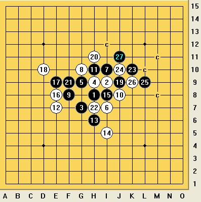

问 斜月2 一个败10如何杀？
#1 问 斜月2 一个败10如何杀？ 作者：鬼冢弹间 发表时间：2010-4-10 13:43:49
=======上图对应的爱五子棋谱代码如下，以便你拆解：========
h8h9i7g9i9g7g10i10j8f8h10k7h6g5g8k8k9l10f9h11j9h7e10f10d9e9
======================================================
这个败10如何杀 这个局面之后黑能杀？
#2 Re:问 斜月2 一个败10如何杀？ 作者：岑小鱼 发表时间：2010-4-10 14:08:52
=======上图对应的爱五子棋谱代码如下，以便你拆解：========
h8i9g7h9g9i7i10g10f8j8h10e7h6i5i8e8e9d10j9h11f9h7k10j10l9k9f10f11f6f7g6e6e5d4g5g8d5f5l11m12l10l8i11j12j11i12k11m11l13l12k12m14m10m13m15n9c6
======================================================
是这个变化吧? 貌似是yoda老师最先公布的解法?
#3 Re:问 斜月2 一个败10如何杀？ 作者：鬼冢弹间 发表时间：2010-4-10 14:14:55
谢谢楼上 强大 ~
#4 Re:问 斜月2 一个败10如何杀？ 作者：小帮帮 发表时间：2010-4-10 15:04:53
刚才用的骗，又在这里被整了地毯，以后还下什么变化好咧
#5 Re:问 斜月2 一个败10如何杀？ 作者：wd1988 发表时间：2010-4-12 14:31:59
哪有这么麻烦？简直....

 1.rar
1.rar
［ 茗弈小刀 于 2010-4-12 15:25:23 时奖励此帖[金币加 20 威望加1］
#6 Re:问 斜月2 一个败10如何杀？ 作者：wd1988 发表时间：2010-4-12 15:30:52
终于威望50了，谢谢小刀~
#7 Re:问 斜月2 一个败10如何杀？ 作者：岑小鱼 发表时间：2010-4-12 17:02:17
从思路上和分支的多寡来说 楼上的都比较复杂
我学的方式或许手数长一些 但是思路简明 路线单一 非常容易上手
［ 茗弈宽容 于 2010-4-12 18:18:22 时花20金币送鲜花一朵］